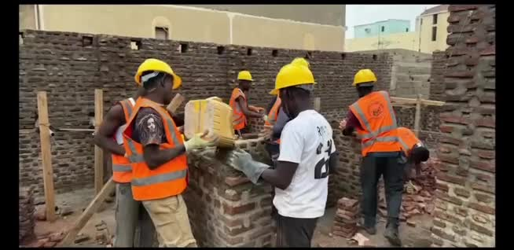
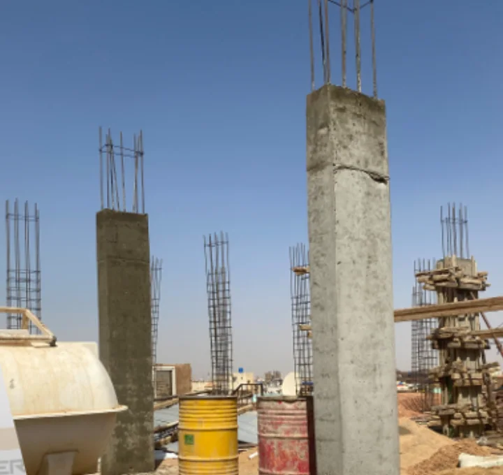
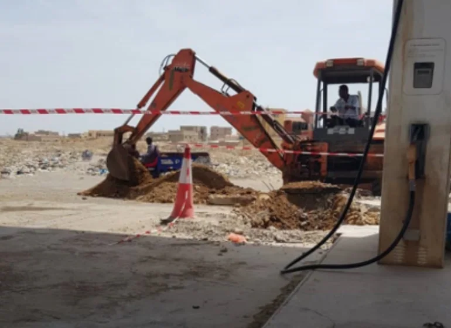
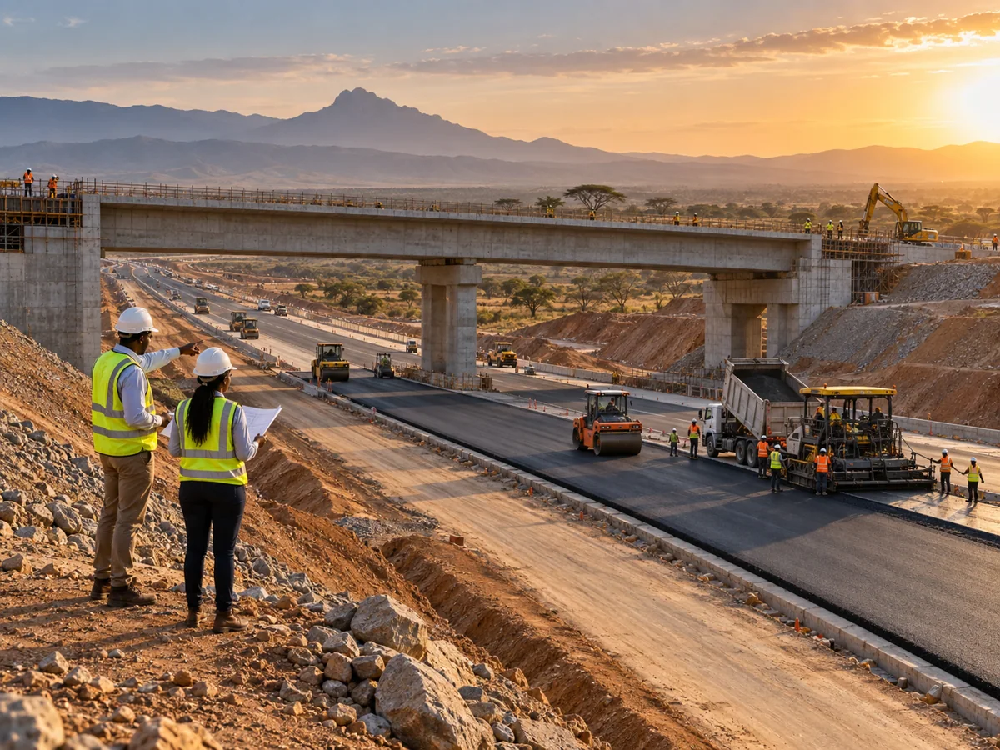
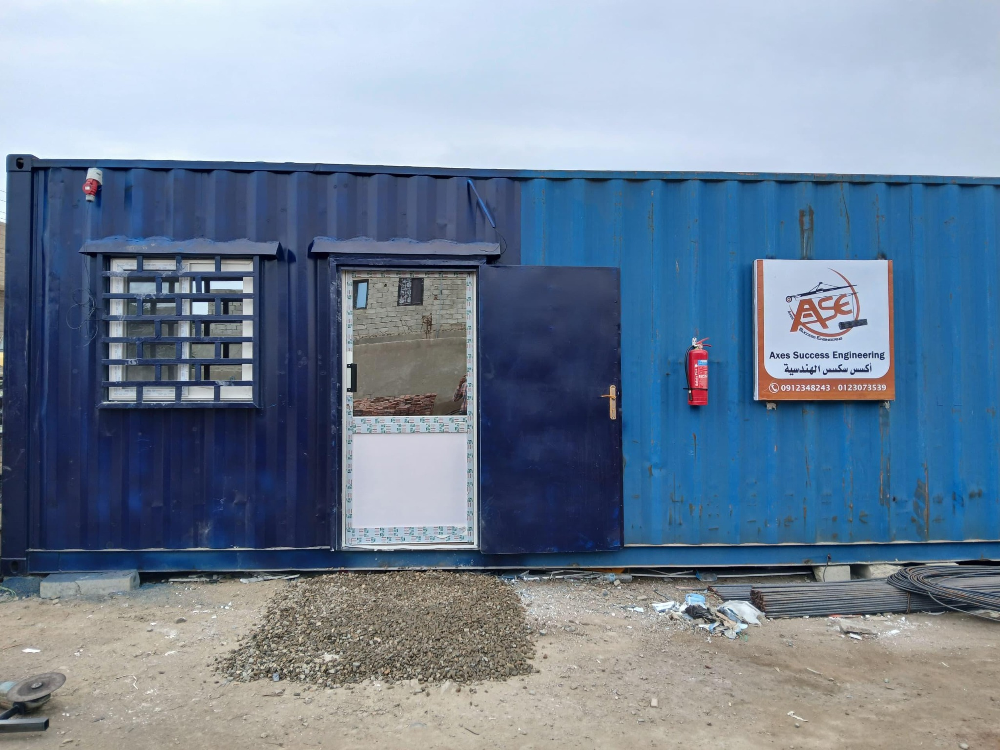
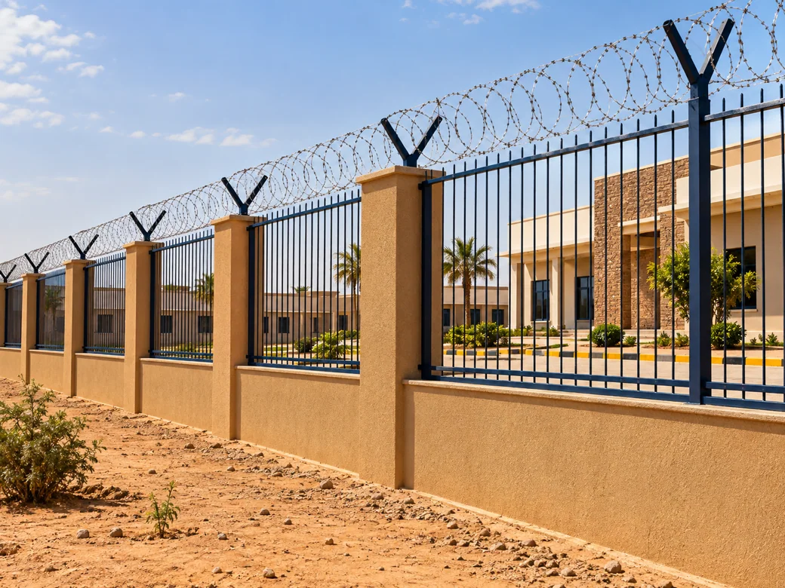

OUR CAPABILITIES
خدماتنا
تخصصات مترابطة لمشاريع البناء والبنية التحتية.
WHAT WE DO
من الفكرة إلى الموقع
صور الطرق والجسور والمنشآت الصناعية توضيحية، بينما بقية الصور من مواد الشركة.



صورة توضيحية
صورة توضيحية
ADDITIONAL SERVICES
خدمات متخصصة في الموقع
مكتب هندسي متحرك
مكتب في موقع العمل مع مهندس للمراقبة والمتابعة على مدار 24 ساعة.
كاميرات المراقبة
تركيب احترافي لكاميرات المراقبة لحماية المباني والمواقع. الصورة توضيحية.

حماية المحيط
تركيب الأسلاك الشائكة لحماية محيط المبنى. الصورة توضيحية.